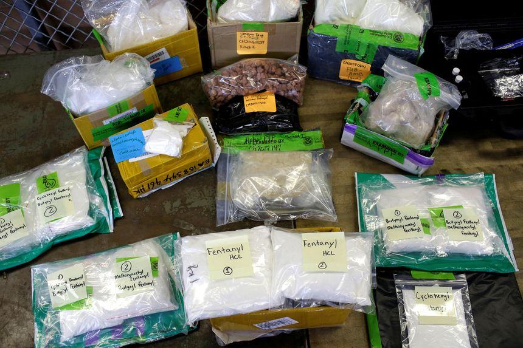
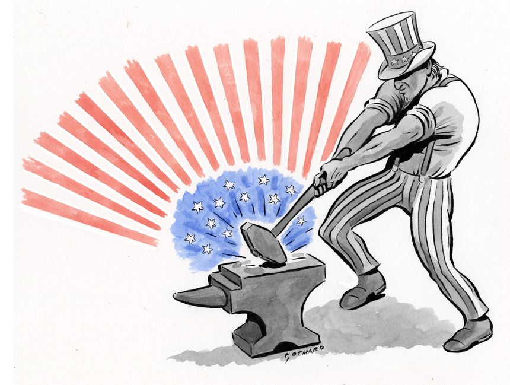

| 时间 | 分类 | 标题 | 副标题 | 正文 | 图片 |
|---|---|---|---|---|---|
| 2022-06-01 19:49:00 | Markets | Meta Loses an Anchor | Sheryl Sandberg’s unsurprising departure still reflects a major shift for Facebook parent | In the sea of “Metamates,” Sheryl Sandberg is either jumping ship or is being pushed overboard. Either way, the company formerly known as Facebook—under a new name and bound for a new destination—has the same captain. And he will be fully responsible for the voyage from this point onward. In a Facebook post on Wednesday, Ms. Sandberg said she was stepping down from her role as Meta ’s chief operating officer after 14 years at the company. Her stated reason was to focus more on her family and philanthropic work, but the move comes at a delicate time for an advertising business that she headed—and still accounts for 97% of the company’s revenue. |
|
| 2022-06-01 19:03:00 | Opinion | When Progressives Fail, Inflation Edition | Why the public has lost confidence in claims to authority. | The White House is finally conceding that it made a political mistake in underestimating inflation, with some officials even offering a modified, limited mea culpa. We suppose that’s progress, but the return of soaring prices after a 40-year hiatus is also an historic policy failure that is worth recounting. It represents a failure of progressive expertise that is a lesson for the future. “I think I was wrong then about the path that inflation would take,” Treasury Secretary Janet Yellen told CNN on Tuesday, referring to a 2021 comment that there was a “small risk” of inflation. “There have been unanticipated and large shocks to the economy that have boosted energy and food prices and supply bottlenecks that have affected our economy badly that I, at the time, didn’t fully understand, but we recognize that now.” |
|
| 2022-06-01 19:02:00 | Opinion | ‘Top Gun’ Culture and Reality | The movie’s success is notable, but the U.S. needs more real-life pilots. | ‘Top Gun: Maverick” crushed box-office debut records over Memorial Day weekend, and it’s worth asking why. Could this be an entertainment phenomenon that says something larger about the current moment in American culture? No doubt many are showing up to see Tom Cruise, who plays U.S. Navy fighter pilot Pete “Maverick” Mitchell, as he did in the original “Top Gun” in 1986. But the movie’s opening weekend outperformed the box office for Mr. Cruise’s other hits such as the “Mission: Impossible” franchise. It’s no easy feat to stick the landing of a sequel more than three decades after the first movie. |
|
| 2022-06-01 19:02:00 | Opinion | Biden’s Ukraine Rocket Whiplash | Kyiv will get weapons for the artillery war, albeit belatedly. | The White House on Wednesday announced $700 million more in weapons for Ukraine, and the good news is the U.S. will send some sophisticated firepower to help beat back the Russians in the country’s east. Russia is gaining ground in Ukraine as the war has become a brutal artillery fight. The Russian advance is slow and costly, including “devastating losses amongst mid and junior ranking officers,” the Institute for the Study of War noted this week. But the Russian military has an artillery advantage in range and firepower. |
|
| 2022-06-01 18:57:00 | Opinion | Justin Trudeau Runs for Congress | The Canadian Prime Minister can’t get enough of U.S. politics. | One of the oddities of Canadian politics is that its Liberal Party politicians so often sound like they’re running for office in the U.S. And, right on time this week, Canadian Prime Minister Justin Trudeau has announced that he wants to ban the sale of handguns and confiscate so-called assault weapons via a mandatory buyback. The timing is no coincidence, as Mr. Trudeau is responding to the U.S. debate over guns and mass shootings. Apparently Canadian politics is too boring, or parochial, or something, because he also vowed to defend abortion rights after the draft Supreme Court opinion overturning Roe v. Wade was leaked. He even made a show of kneeling at a Black Lives Matter rally in June 2020. |
|
| 2022-06-01 18:34:00 | Opinion | Inflation Isn’t Transitory, but It Isn’t Permanent Either | While the Fed has interest-rate work to do, food and energy prices will level off and supply chains will heal. | The Federal Reserve is in the early stages of tightening monetary policy to fight inflation. Most Fed watchers expect 50-basis-point interest rate hikes in June and July and more after that. Quantitative tightening to shrink the Fed’s balance sheet will also begin soon. As always, the Fed will be graded on its performance by market reactions, the commentariat, and some members of Congress. In fact, the grades are already pouring in with an overwhelming majority giving the Fed low marks for not tightening sooner. In the jargon, it is “behind the curve.” |
|
| 2022-06-01 18:34:00 | Opinion | Biden Has No Plan to Fight Inflation | Americans aren’t buying the idea that we can spend our way out of this mess. | Welcome to the Journal’s pages, Mr. President. I trust your recent op-ed on your inflation plan is the first of many contributions to the paper. I admit to being envious: You were given 1,122 words to tell your story. We lesser lights get fewer than 820. Let me begin with common ground. You started your piece by admitting that “Americans are anxious” about the economy. I agree. So does most everyone else. In May, the Gallup Economic Confidence Index hit its lowest mark since early 2009, near the Great Recession’s end. |
|
| 2022-06-01 18:30:00 | Opinion | Biden’s Title IX Rewrite Is an Assault on Women’s Rights | The administration’s new draft rules redefine the word ‘sex’ to mean ‘gender’ and ‘gender identity.’ | Title IX is a simple anti-discrimination mandate that prohibits federally funded educational institutions from discriminating “on the basis of sex.” Yet, without congressional authorization or other constitutional authority, the Biden administration is writing new Title IX rules to socially engineer every aspect of the educational experience—from student speech and school athletics to high-school locker room use and relationships between adult college students. These draft rules, leaked to the media in dribs and drabs, have been delayed repeatedly to avoid organized backlash. Behind the scenes, the administration is telling educational institutions that the rules are a fait accompli, demanding enforcement that curtails freedom of speech, due process and women’s rights. |
|
| 2022-06-01 18:28:00 | Opinion | Harvard Needs Merit-Based Admissions | A Supreme Court decision could force colleges to move away from affirmative action and create true diversity on campus. | The Supreme Court, in its next term, will render a decision in Students for Fair Admissions Inc. v. President & Fellows of Harvard College, which will determine the legality of Harvard’s race-based affirmative-action program. The plaintiff's claim that, by creating a floor for certain racial and ethnic groups in its admissions, Harvard created a ceiling for Asian-Americans. The result is that Asian-Americans who are academically qualified become victims of discrimination. If the court rules in favor of the plaintiffs, as many experts believe it will, Harvard and many universities around the country will have to continue their quests for increased racial diversity without violating the specific terms of the decision. |
|
| 2022-06-01 18:27:00 | CFO Journal | Stanley Black & Decker Elevates Finance Head to Chief Executive | CFO Donald Allan Jr. will take the company’s helm on July 1. The move comes amid a decline in the tool maker’s share price and widespread supply-chain difficulties | ||
| 2022-06-01 18:24:00 | Opinion | Someday We’ll All Look Back and Laugh | Hard times don’t last forever. Trace Adkins—and Virgil—taught me that. | The older I get, the more “You’re Gonna Miss This,” country musician Trace Adkins’s beautiful ballad about family life, rings true. Released in 2008 and played consistently in my kitchen since then, the sublime song stresses the importance of appreciating all of life’s moments, even the messy ones. Today’s troubles, the tune teaches, become tomorrow’s treasures. This wise counsel has classical roots. In Book One of Virgil’s “The Aeneid,” Trojan hero Aeneas, after the fall of Troy, rallies his storm-tossed and cityless countrymen with these fateful words: Forsan et haec olim meminisse iuvabit—“Someday it will be pleasing to recall even these things.” Hard times eventually end and when they do, they’re recollected differently. As a father, I’ve tried very hard to heed this lesson. |
|
| 2022-06-01 18:20:00 | Opinion | Yellen Admits Inflation Error | Is the Treasury secretary now ready to acknowledge her corporate tax mistake? | The Biden administration assembled a leftist dream team of tax hikers to help raise the cost of working and investing. Now some team members are quitting the government to return to academia. While it’s too early for taxpayers to cheer, hopes are rising that the U.S. can avoid new burdens on productive enterprise. If there’s a silver lining in President Joe Biden’s inflation debacle, it’s that his economic team has lost a significant measure of credibility as it tries to push destructive policies through Congress. No team member has suffered greater reputational damage than Treasury Secretary Janet Yellen, formerly a celebrated pillar of the credentialed economic establishment. CNN’s Kevin Liptak and Paul LeBlanc report: |
|
| 2022-06-01 17:28:00 | Markets | Former NFT Marketplace Employee Charged in Insider Trading Scheme | Prosecutors said case is first to involve alleged insider trading of NFTs | The Justice Department charged a former employee of an NFT marketplace with fraud and money laundering in what prosecutors said was the first case to involve insider trading of the digital tokens. An indictment unsealed Wednesday in New York charged Nathaniel Chastain, a 31-year-old former product manager at the online marketplace OpenSea, with using inside information to profit on NFTs, or nonfungible tokens, that were to be featured on his employer’s home page. Mr. Chastain was arrested Wednesday morning and later pleaded not guilty at his arraignment in a Manhattan federal court. A federal magistrate judge set his release at a $100,000 bond and ordered him to surrender his passport and not to contact current or former OpenSea employees. |
|
| 2022-06-01 16:30:00 | Economy | James Bullard Says Fed Must Deliver Rate Hikes Expected by Markets | The Federal Reserve Bank of St. Louis president says the economy is feeling more policy tightening than the central bank has delivered | Federal Reserve Bank of St. Louis President James Bullard said Wednesday financial markets have priced in a lot of central bank rate rises and it is up to the U.S. central bank to ratify that situation with continued rate increases. “The fact that market interest rates have moved above their prepandemic benchmarks while the policy rate has not can be read as an illustration of the effect of credible forward guidance,” Mr. Bullard said in materials for a presentation. “The Fed still has to follow through to ratify the forward guidance previously given, but the effects on the economy and on inflation are already taking hold,” he said. |
|
| 2022-06-01 16:22:00 | Logistics Report | East Coast’s Busiest Seaport Gets New Leadership as Shipping Challenges Mount | Bethann Rooney takes the top post at the Port of New York and New Jersey as the gateway’s cargo volumes surge | ||
| 2022-06-01 15:22:00 | Markets | SeatGeek and Forbes Nix SPAC Deals During Market Pullback | Souring investor sentiment has many would-be public firms reconsidering plans to list via blank-check companies | Ticketing platform SeatGeek and media outlet Forbes Global Media Holdings Inc. terminated their mergers with blank-check firms on Wednesday, underscoring the challenges of taking companies public during this year’s stock-market turbulence. SeatGeek and Forbes became the latest companies to end combinations with special-purpose acquisition companies, or SPACs, after many investors soured on the once-hot alternative to traditional initial public offerings. With rising interest rates and high inflation buffeting stocks, many companies are electing to raise money privately instead of pursuing public listings, which skyrocketed to record levels last year. |
|
| 2022-06-01 15:09:00 | Economy | Bank of Mexico Lowers Economic Growth Forecasts | The central bank sees GDP expanding 2.2% in 2022 and 2.4% in 2023 | MEXICO CITY—The Bank of Mexico cut its economic growth estimates for this year and 2023, citing persistent supply-chain disruptions and higher inflation leading to a lower global growth outlook. In its quarterly report, the central bank said Wednesday that it expects gross domestic product to expand 2.2% in 2022, down from its previous estimate of 2.4%, while lowering the 2023 forecast to 2.4% from 2.9% previously. |
|
| 2022-06-01 14:16:00 | Markets | Binance Raises $500 Million Fund for Crypto Investments | Investment capital comes despite big pullback in cryptocurrency prices | Investment capital continues to pour into the crypto space even as the prices of most cryptocurrencies are at half their highs. On Wednesday, Binance Labs, the investment arm of the crypto exchange Binance, announced it closed on a $500 million investment fund with capital from outside firms including DST Global Partners and Breyer Capital. |
|
| 2022-06-01 13:34:00 | Economy | Jerome Powell Lists Stock Fund, Local Government Bond Holdings for 2021 | The Fed chairman disclosed dozens of fund holdings for last year, before more restrictive investment rules for central bankers kicked in this May | Federal Reserve Chairman Jerome Powell listed holdings largely made up of stock funds and local government debt in his financial disclosure statement for 2021. Mr. Powell’s disclosure doesn’t show any transactions in individual stocks or other securities. His form lists a number of transactions in funds for municipal debt securities as well funds that hold collections of stocks. Some of Mr. Powell’s transactions don’t have trade dates listed, but a Fed spokesperson said those transactions are tied to automatic reinvestments, a practice permitted by the government ethics office. |
|
| 2022-06-01 13:30:00 | Opinion | Queen Elizabeth II’s Reign of Dignity | Links between the U.S. and U.K. have intensified at every level since her majesty’s accession in 1952 to her platinum jubilee this weekend. | Britain’s Queen Elizabeth II, who celebrates her platinum jubilee this weekend, has ruled for more than a quarter of the U.S.’s unruly existence. Looking back on her experience of the U.S. and its people during 70 years as monarch, she might note how little has changed. Her first prime minister, Winston Churchill, had an American mother. Her current prime minister, Boris Johnson, was born in New York and only renounced his U.S. citizenship in 2016. Today as in the 1950s, Britain is bickering with France, and is allied tightly with the U.S. against Russia. One of the queen’s relatives—not her uncle Edward VIII, but her grandson Prince Harry—is complaining in the American media that his family doesn’t understand him. Since the queen’s accession in 1952, links between the U.S. and U.K. have intensified at every level, from military and intelligence coordination to politics, finance and entertainment. Two of the last three presidents are children of subjects of her father George VI: Barack Obama on his father’s side and Donald Trump on his mother’s. Prince Harry’s marriage to Meghan Markle continues the trans-Atlantic merging that has been going on since Randolph Churchill married Brooklyn-born Jennie Jerome. So do the queen’s Zoom visits with her great-grandchildren in Montecito, Calif. |
|
| 2022-06-01 13:30:00 | Opinion | Prosecute the Supreme Court Leakers | If it turns out to be a law clerk, there are federal statutes under which criminal charges can be brought. | The leak of a draft Supreme Court opinion to a Politico reporter in May was a historic betrayal of the bench. Investigators reportedly are taking steps to obtain phone records and affidavits from the justices’ law clerks. If the leaker turns out to be a law clerk, he or she will be so ethically compromised that a career in the law will almost certainly be out of reach. Most commentators agree that federal law doesn’t criminalize such court leaks. We see things differently. Working in the chambers of a federal judge—whether on the Supreme Court or elsewhere—is for good reason considered the best first job a law school graduate can land. Thousands of highly qualified law students typically apply for a single slot. The job affords entrance into an elite circle, and promises to open professional doors and provide credibility during the new attorney’s career. But this honor comes with the solemn institutional expectation that what happens in chambers stays in chambers. Justice Antonin Scalia had a reputation for not mincing words on the subject. He warned incoming classes of law clerks that he would do “everything in [his] power” to “ruin” the career of any law clerk who betrayed his confidences. |
|
| 2022-06-01 13:14:00 | Markets | Salesforce Provides Limited Cloud Cover | Strong results from cloud-software leader won’t clear up questions about industry demand | Sometimes, even the biggest cloud still doesn’t pack enough of a silver lining. Fiscal first-quarter results from Salesforce seemed to bring a ray of light to the beaten-down cloud-software sector. Revenue jumped 24% year over year to $7.4 billion as the largest pure-play seller of subscription-based enterprise software claimed to see no slippage in demand due to the macroeconomic challenges impacting many industries. That gave cloud stocks a boost in early-morning trading Wednesday. |
|
| 2022-06-01 11:54:00 | Opinion | On the Hunt for Solutions to Mass Shootings | Learn from the red flags that keep recurring time and again since Columbine. | I agree with your editorial “Young Men, Guns and Guardrails” (May 26) that there’s a “cultural erosion” that contributes to mass shootings. This may take years to repair. In the meantime, could something as simple as an alert system be put in place between gun sellers and the local police? It would signal when someone has purchased massive quantities of ammunition. Guns can’t kill without bullets. Pamela Saba |
|
| 2022-06-01 11:53:00 | Opinion | Why Law Schools Should Not Drop the LSAT | This is the wrong place to virtue signal. | Having practiced law for 45 years, and taught law for 25 of them, I can assure you that lawyers have to know how to think in a particular way that is unique to the profession. Law schools need an objective tool to measure whether an applicant has that capability. For decades, the LSAT has been such a tool (“Law Group Proposes LSATs Be Optional,” Page One, May 21). The recommendation of the ABA panel is an irresponsible and unrealistic example of virtue signaling. It’s nice to have a diverse population of lawyers. But it’s most important to have a diverse population of competent lawyers. Robert E. Panoff |
|
| 2022-06-01 11:51:00 | Opinion | Stop Rewarding Bad Behavior in Healthcare | More subsidies won’t solve the problem of rising costs. | Our healthcare system is off the rails. Primary-care appointments set for 2023 are the norm. Disrupted supply chains are creating shortages in everything from local anesthetic to cancer treatments. And the solution? Add oil to the fire by expanding already misguided ObamaCare subsidies (“When ‘Temporary’ Subsidies Are Forever,” Review & Outlook, May 31). It’s time to tell the truth. Middlemen make up an astonishing 73% of healthcare spending—one-third of every tax dollar. GPOs and PBMs, in collusion with insurers, raise prices but restrict access. They are protected by a 1987 safe-harbor law that exempts them from oversight. |
|
| 2022-06-01 11:36:00 | Markets | Victoria’s Secret Is Still a Show-Me Story | Makeover at intimates brand is well under way, even though it isn’t fully visible to investors yet | It has been 10 months since Victoria’s Secret spun off from L Brands and revamped its brand to be more women-centric. While the message is starting to resonate with consumers and Wall Street analysts, it is taking longer to reach investors. Victoria’s Secret said on Tuesday that its total revenue declined 4.5% in the quarter ended April 30, at the high end of its own guidance and better than the 5.2% decline analysts polled by Visible Alpha expected. Chief Executive Officer Martin Waters said on a call with analysts on Wednesday that bras and beauty sales gained good momentum, as did international business as countries recovered from Covid-related restrictions. |
|
| 2022-06-01 10:52:00 | Markets | Shanghai Is Back, but China’s Young Workers Are Still Stuck | China’s economy is struggling to produce enough jobs for its educated workforce, a problem that could persist even after Covid-19 curbs are finally lifted | Shanghai is reopening, to the relief of millions of residents. The hashtag “Shanghai is back” is lighting up Weibo, China’s Twitter -like microblogging service. But the scenes of jubilation from Shanghai, and modestly better economic news—factory purchasing managers index readings for May have ticked up—belie a deeply troubled labor market. Unemployment for the 16-to-24-year-old cohort was 18.2% in April according to China’s statistics bureau, well above the previous recorded high of 16.8% in July and August of 2020. Given that youth unemployment typically peaks in the several months after graduation, that number will probably head even higher this summer. Less than half of new college graduates had an offer in hand as of last month according to a survey from online recruitment website Zhaopin, compared with 63% in the spring of 2021, and about 75% in 2018. |
|
| 2022-06-01 09:06:00 | Markets | Time to Take the ‘E’ Out of ESG Investing | The decision by the boss of DWS to step down is a wake-up call to the investment industry as environmental claims come under growing scrutiny | The days when selling ESG funds was an easy marketing ploy for fund managers are over. Investing based on environmental, social and governance criteria has been a hugely popular new market for full-service asset managers struggling to compete with low-fee tracker funds. While this type of ethical investing can genuinely mean different things to different people, scrutiny of the environmental part of the claims is rising. |
|
| 2022-06-01 07:03:00 | Markets | Main Street Investors Break Records in Rush for U.S. Government Bonds | Rising rates, falling stock prices have prompted a surge of cash into U.S. Treasury funds as well as a craze for inflation-linked savings bonds | Meme stocks are fading. Crypto has cooled. The latest hot investment for individual investors: U.S. government bonds. Lured by higher interest rates and spooked by turmoil in stocks, investors poured a net $20 billion into mutual and exchange-traded funds that focus on buying ordinary U.S. Treasurys over the four-week period ended May 25, according to Refinitiv Lipper. That marked the largest infusion over a four-week span in records going back 29 years. |
|
| 2022-06-01 07:00:00 | Markets | Broadcom Can Avoid the Conglomerate Curse | Chip maker will become half a software company, but its focus on cash flow over growth remains | Broadcom will look like a very different company next year. The trick will be making sure the right things stay the same. The $61 billion acquisition of VMware unveiled last week sets the chip maker on a path to becoming a new type of technology conglomerate. After the deal closes—currently expected sometime in Broadcom’s fiscal year ending in October 2023—about half the company’s total revenue will come from software. That mix could tilt even further if the current chip shortage ever eases and the semiconductor industry reverts back to its cyclical nature. Global chip sales have dropped in six of the past 20 years, according to data from the Semiconductor Industry Association. |
|
| 2022-06-01 07:00:00 | Private Equity May Not Be the Defensive Play Some Say It Is | Individual investors are making a potentially risky move into private-markets funds, researchers say | Private-equity firms are marketing themselves to individual investors as a counterweight to volatile stock markets, arguing their funds perform better during downturns. But some researchers question this sales pitch, pointing to buyout funds’ high leverage levels and their so-so performance in the most recent recession. Private-equity fund... |
||
| 2022-06-01 07:00:00 | CMO Today | Tribeca Festival Signs Crypto Trading Desk OKX as Its New Top Sponsor | The cryptocurrency exchange platform, little known in Western markets, is a departure from previous presenting Tribeca sponsors American Express and AT&T | ||
| 2022-06-01 06:29:00 | Markets | Stock Futures Swing in Choppy Trading | Lightly staffed trading desks during the summer months could spur more volatility in the weeks ahead | U.S. stock futures swung in a choppy trading session, pointing to more volatility ahead for major indexes as June trading kicks off. Futures for the S&P 500 on Wednesday wavered between small gains and losses. Contracts for the Dow Jones Industrial Average gained 0.3%, while those for the technology-focused Nasdaq-100 fell 0.2%, erasing gains from earlier in the day. On Tuesday, major U.S. indexes fell, leading the S&P 500 to end May roughly flat after a tumultuous month marked by major moves in both directions. |
|
| 2022-06-01 05:43:00 | Oil Markets | Russian Oil Producers Stay One Step Ahead of Sanctions | Shippers and refiners hide origin of Russian oil, and some is getting into the U.S. | Europe just targeted Russian crude with its toughest sanctions yet, but shippers and refiners are getting the oil to market by obscuring its origins. Some fuels believed to be partially made from Russian crude landed in New York and New Jersey last month. The cargoes were brought through the Suez Canal and across the Atlantic from Indian refineries, which have been big buyers of Russian oil, according to shipping records, Refinitiv data and analysis by Helsinki-based think tank Centre for Research on Energy and Clean Air. |
|
| 2022-06-01 05:30:00 | Markets | Investors Spot Bargains Among Small-Cap Stocks | The extent of recent declines are questioned by some; ‘small caps have fallen too hard’ | Shares of smaller U.S. companies have taken a drubbing in the market selloff. Some investors say they are starting to see a deal. The Russell 2000 benchmark of small-cap stocks has fallen 24% from its November record, beginning its decline almost two months before the S&P 500 index of large-cap companies. The S&P 500 is down 12% over the same period, dragged lower as investors realized that red-hot inflation was sticking around and that the Federal Reserve would likely raise interest rates more aggressively than had been expected. |
|
| 2022-06-01 05:30:00 | Markets | Missed Payments, Rising Interest Rates Put ‘Buy Now, Pay Later’ to the Test | Affirm, Afterpay and Klarna grew rapidly during the consumer-spending boom. Investors have concerns as outlook looks cloudier. | “Buy now, pay later” companies promised a credit revolution that would change the way people pay for things. Rising delinquencies and a slowing economy are clouding that outlook. Payment plans that allow shoppers to split up the cost of things such as clothing, makeup and home appliances were all the rage last year. The companies behind the plans saw their valuations surge. Scores of retailers rushed to add them at checkout. Block Inc . (formerly Square Inc.) in August announced a roughly $29 billion all-stock deal for Afterpay, one of the biggest companies in the business. |
|
| 2022-06-01 05:30:00 | Markets | Americans Start Summer Travel Season Beset by Record Gas Prices | National average for gasoline finished May above $4.60 a gallon | Millions of Americans hit the road over Memorial Day weekend, with record-high gas prices pinching their wallets. The national average price for a gallon of regular unleaded gas hit $4.62 as of Monday, according to AAA, $1.58 higher than a year earlier and about 12% above the pre-2022 high of $4.11 set in 2008. Prices have risen about 11% over the past month, the organization’s figures indicated, and gas was recently above $4 in all 50 states. |
|
| 2022-06-01 04:58:00 | Markets | CEO of Deutsche Bank’s DWS Resigns After Police Raid on Offices | Asoka Woehrmann will be replaced as of June 10 amid government inquiries into alleged greenwashing at the firm | The chief executive of Deutsche Bank AG ’s asset-management subsidiary DWS Group will step down, the German lender said Wednesday, a day after a raid by German authorities on its Frankfurt offices. |
|
| 2022-05-31 20:27:00 | Bankrupt Zohar Funds Oust Lynn Tilton From Cosmetics Maker Stila | A Delaware judge says the turnaround manager wrongly stripped the Zohar funds of their right to appoint Stila’s manager | Turnaround financier Lynn Tilton was ousted from control of Stila Styles LLC, a cosmetics maker owned by the bankrupt Zohar investment funds she has been fighting for nearly a decade over her shrinking business empire. A Delaware Chancery Court judge ended Ms. Tilton’s managerial control of Stila, saying she had wrongly stripped one of her Zohar funds of its stockholder rights to replace her as the company’s sole manager. A... |
||
| 2022-05-31 19:00:00 | Opinion | The West’s Struggle for Mental Health | Rates of functional mental illness are high in open societies and low in authoritarian ones. | Since the 1990s, there has been talk of a mental-health epidemic in the U.S., particularly among young people. The mass shootings last month in Uvalde, Texas, and Buffalo, N.Y., carried out by 18-year-old gunmen, have heightened fears that something’s gone horribly wrong. But the problem isn’t new. American psychiatrists have been studying rates of functional mental illness, such as depressive disorders and schizophrenia, since the 1840s. These studies show that the ratio of those suffering from such diseases to the mentally healthy population has been consistently rising. Ten years ago, based on the annual Healthy Minds study of college students, 1 in 5 college students was dealing with mental illness. Between 2013 and 2021, according to Healthy Minds, the share of U.S. college students affected by depression surged 135%. During the same period, the share of students afflicted by any psychiatric illness doubled to more than 40%. “America’s youth,” wrote journalist Neal Freyman in April, “are in the midst of a spiking mental health crisis, and public health experts are racing to identify the root causes before it gets even worse.” |
|
| 2022-05-31 18:59:00 | Opinion | Perception Diverges From Reality on Mass School Shootings | Gun-control advocates want you to think that tragedies like Uvalde are more common than they are. | Saturation media coverage of such terrifying events as the mass shooting at Robb Elementary School in Uvalde, Texas, can leave some people with the impression that these things occur far more often than they do. Three years ago, on the 20th anniversary of the Columbine High School shooting in Littleton, Colo., the New York Times published an article noting that public perceptions of school safety are largely at odds with what the data show. “The unique horror of mass shootings,” the Times reported, “means they occupy a central place in parents’ fears, and in the nation’s political debate about gun access and school safety, even though they remain rare.” Most gun-related deaths—54% in 2020—are suicides. Mass shooting casualties are less than 1% of all gun deaths, and there have been 13 mass school shootings since 1966. These data points are cold comfort to those mourning the shooting victims in Uvalde, but they ought to inform any public policy response under consideration. |
|
| 2022-05-31 18:58:00 | Opinion | Notable & Quotable: Adrift | ‘Biden’s feeling lately is that he just can’t catch a break’ | From “Inside a Biden White House Adrift,” by Carol E. Lee, Peter Nicholas, Kristen Welker and Courtney Kube at NBCNews.com: |
 |
| 2022-05-31 18:55:00 | Opinion | The European Bank of Inflation | As eurozone prices soar, the ECB is way behind the Federal Reserve in monetary tightening. | Bad inflation datapoints are common these days, and Tuesday’s news is that eurozone consumer prices rose 8.1% in May. Is European Central Bank president Christine Lagarde still on the job? May’s number is the fastest eurozone inflation since the euro was introduced in 1999. The average conceals much faster inflation in major European economies. It’s 8.7% in Germany, 10.2% in the Netherlands and 8.5% in Spain. Even relative laggards France (5.8%) and Italy (7.3%) are witnessing faster price rises than any time in recent memory. |
|
| 2022-05-31 18:52:00 | Opinion | What Can Be Done About the Opioid Crisis? | Students discuss drug-policy reform, addiction and fentanyl overdoses. |  | |
| 2022-05-31 18:50:00 | Opinion | Europe Hits Putin Where It Hurts | A ban on most oil imports from Russia will hit his war financing. | Behold, after a month of wrangling, the European Union’s 27 member states have agreed to a new package of sanctions targeting Russian oil. While the sanctions won’t turn the tide of war in Ukraine, they raise the cost for Vladimir Putin and demonstrate Europe’s resolve to punish him. The new round of sanctions that Brussels announced this week will ban imports of Russian oil by sea as well as insurance for shipping companies that transport it globally. These combined measures could severely crimp oil sales that fuel Mr. Putin’s war machine and Russia’s economy, but they are also important political symbolism. |
|
| 2022-05-31 18:46:00 | Opinion | The Sussmann Verdict | A jury acquits the Clinton campaign lawyer, but the case revealed a lot about the Russia collusion dirty trick. | A Washington, D.C., jury on Tuesday acquitted Clinton campaign lawyer Michael Sussmann of lying to the FBI, and the verdict is no doubt a disappointment for special counsel John Durham. But the case did perform a public service by exposing a major part of the 2016 Russian collusion dirty trick that hadn’t been previously told. The evidence was strong enough to bring an indictment, and it was reinforced by a text message in which Mr. Sussmann had told FBI general counsel James Baker that he represented no client. In truth he represented the Clinton campaign, as billing records showed. But Mr. Durham had charged Mr. Sussmann with lying to Mr. Baker in person, not in the text message, which the special counsel only obtained after he had filed the original indictment. |
|
| 2022-05-31 18:42:00 | Opinion | The Criminal Streets of San Francisco | Voters can send a message by recalling district attorney Chesa Boudin. | Crime has surged in many big American cities, and one reason is the rise of progressive prosecutors who refuse to enforce criminal laws. San Francisco voters have a chance to send a national message on June 7 when they decide whether to recall district attorney Chesa Boudin. “We have a long way to go to decriminalize poverty and homelessness,” Mr. Boudin said as he campaigned for the job in 2019. He vowed “not to prosecute cases involving quality-of-life crimes” such as homeless camps in the streets, prostitution, obstructing sidewalks or public urination. Ending cash bail was among his first official acts, and the district attorney’s website shows a sharp reduction in felony prosecutions in Mr. Boudin’s tenure. |
|
| 2022-05-31 18:38:00 | Opinion | Thoughts and Prayers Do Help | As Lincoln showed, they can spur action, if earnest and hopeful. | Many Americans are understandably tired of prayers to end mass shootings. Familiar platitudes such as “thoughts and prayers to the families” seem hollow when offered without clear policy proposals. But the presence of prayer preserves the urgency for action and has since America’s inception. In 1865, amid the Civil War, Abraham Lincoln was inaugurated to his second term as president. He delivered one of the shortest but most memorable inaugural addresses in our nation’s history. “Fondly do we hope,” he famously said, “fervently do we pray—that this mighty scourge of war may speedily pass away.” |
|
| 2022-05-31 18:28:00 | Risk & Compliance Journal | Wells Fargo Told by Senator to Fix Its Risk-Management Practices | The chairman of the U.S. Senate Banking Committee said Wells Fargo Chief Executive Charles Scharf needs a plan to improve the bank’s internal controls | ||
| 2022-05-31 18:07:00 | Opinion | Are the Bidens Talking Too Much? | NBC reports the President is unhappy; meanwhile brother James chats with the Washington Post. | This column recently advised President Joe Biden to stop speaking in public, at least when the topic is important. Mr. Biden’s habit of making ill-considered spontaneous remarks argues for carefully crafted statements of policy. Ideally, the President would take special pains to avoid off-the-cuff comments about nuclear-armed regimes. It now appears that some people in the White House agree with this column. Unfortunately the President is not among them. Carol Lee, Peter Nicholas, Kristen Welker and Courtney Kube of NBC News report: |
 |
| 2022-05-31 17:39:00 | Opinion | Osmo Vänskä’s Final Bow in Minneapolis | While the longtime music director of the Minnesota Orchestra prepares to leave his post, he won’t be resting on his laurels. | ||
| 2022-05-31 17:13:00 | Pro PE Legal Regulatory | StraightPath Poised to Settle SEC Fraud Charges | The firm has agreed in principle to setting up an escrow fund and naming a receiver, a court document shows | StraightPath Venture Partners LLC and the Securities and Exchange Commission have agreed to a resolution of the agency’s civil fraud charges against StraightPath and are working out details, including naming a receiver for the firm, a court document shows. The agreement also includes the creation of an escrow account of more than $15 million to be supplied by three of the four individual defendants in the case, although a joint letter from the SEC and the Jupiter, Fla.-based firm dated May 26 doesn’t specify which of the four, Brian K. Martinsen, Michael A. Castillero, Francine A. Lanaia and Eric D. Lachow, would be responsible for providing the cash. But an earlier filing said Mr. Martinsen, Ms. Lanaia and Mr. Castillero “are prepared to place $15 million in escrow pending the outcome of this litigation.” |
|
| 2022-05-31 16:50:00 | CMO Today | Marketers Are Curbing Some Advertising to Children | Parental concerns on issues from childhood obesity to privacy are converging with rollbacks in targeting and looming regulatory changes. Some brands are reining in their pitches to kids to get a head start | ||
| 2022-05-31 16:35:00 | CFO Journal | U.K. Government Looks to Limit Dominance of Big Four Audit Firms | The changes will give audit oversight authority to a new regulator | ||
| 2022-05-31 16:22:00 | Opinion | Southern Baptists Trample the Rights of the Accused | America’s Catholic bishops also employed a self-serving standard, deeming nearly all sex-abuse claims credible. | Southern Baptists received a warning in 2007 from Fr. Thomas Doyle, a priest who had spent years drawing attention to claims of clergy sex abuse in the Catholic Church. In a letter to the president of the Southern Baptist Convention, Fr. Doyle warned that the denomination was headed for a similar reckoning—unless it acted quickly. Inaction would lead to the same “incredible harm to your Church that the Catholic Church did not avoid.” Fr. Doyle’s warning went unheeded, a fact that Southern Baptist leaders must now regret. Last week a 288-page report on sex abuse commissioned by the convention charged its leaders with myriad failures over the past 20 years. Among other things, the report faults the convention’s leadership for dismissing Fr. Doyle’s invitation to “learn from Catholic mistakes.” |
|
| 2022-05-31 16:20:00 | Opinion | In China, New Evidence That Surgeons Became Executioners | Clinical reports recount scores of cases in which organ donors were alive when operations began. | Eight doctors at the Tongji Medical College hospital in Wuhan, China, traveled 40 miles on March 18, 1994, to procure a heart from a death-row prisoner. But rather than wait until the judicial authorities had executed the prisoner, the doctors carried out the execution themselves—by heart extraction. In a large-scale review we conducted of nearly 3,000 Chinese-language clinical reports and published in the American Journal of Transplantation, we find surgeons acknowledging such actions again and again. |
|
| 2022-05-31 15:59:00 | Oil Markets | OPEC Weighs Suspending Russia From Oil-Production Deal | Western sanctions have begun to take a toll on Moscow’s petroleum output | Some OPEC members are exploring the idea of suspending Russia’s participation in an oil-production deal as Western sanctions and a partial European ban begin to undercut Moscow’s ability to pump more, OPEC delegates said. Exempting Russia from its oil-production targets could potentially pave the way for Saudi Arabia, the United Arab Emirates and other producers in the Organization of the Petroleum Exporting Countries to pump significantly more crude, something that the U.S. and European nations have pressed them to do as the invasion of Ukraine sent oil prices soaring above $100 a barrel. |
|
| 2022-05-31 12:03:00 | Opinion | Ron Johnson Plots a Return to Economic Sanity | Here’s the game plan for a stable economic future. | Dan Henninger asks Republicans to let voters know how to build a stable economic future from “Biden’s Train-Wreck Economy” (Wonder Land, May 26). I’m happy to start talking. It starts with safety and security. We must secure our border and dramatically reduce the flow of illegal immigration by reinstating consequences for illegal entry. The credible-fear standard, which has caused “catch and release” and the massive increase in illegal entries, must be raised closer to the stricter asylum requirements. Asylum claims must be adjudicated rapidly and definitively. Once we control our border, we should establish a legal immigration system that can provide the workers our economy needs without depressing wages. |
|
| 2022-05-31 12:01:00 | Opinion | The Baby Formula Fiasco Is a Lesson in Planning and Incentives | The risk-reward distortion exists at every level of government. | Regarding Holman Jenkins, Jr.’s “One Bad Choice and a Baby Formula Crisis” (Business World, May 21): Competent management at the FDA would have had a contingency plan in place to address such situations as arose at Abbott Laboratories . Preauthorized foreign suppliers should have been called into play immediately, avoiding the delays of a reactive approval process. It’s common sense. Roger Baier |
 |
| 2022-05-31 11:59:00 | Opinion | Corporations, Parliament and the New Prosperity | The liberalization of laws governing incorporation wasn’t part of the mix in the 18th century. | Phil Gramm and Mike Solon make a number of telling points in a long-running debate about corporate purpose in “The ‘Stakeholder’ War on the Enlightenment” (op-ed, May 24), but the history they offer to provide context is problematic. They write that the enlightened 18th-century British Parliament “repealed royal charters” and “permitted businesses to incorporate simply by meeting preset capital requirements.” In fact, Parliament enacted in 1720 the Bubble Act, which imposed penalties on corporate undertakings lacking due authorization by a royal charter or legislation. The Bubble Act wasn’t repealed until 1825, and Parliament didn’t authorize incorporation of limited-liability companies without support from a royal charter or legislation until the mid-1850s. No minimum capital requirements were imposed at that time. |
|
| 2022-05-31 10:52:00 | Markets | Stocks Were Lifted by Less-Bad News. Now We Need Actual Good News. | The consumer is looking healthier, investors are cheerier. But what really matters is how the Fed reacts | Economic data is weakening, sanctions are tightening on Russia, China’s still crushing supply chains in its effort to stamp out Covid, but U.S. stocks have just put in their best week in more than two years. What gives? There are three decent explanations, all of which are in part true, but only one of which involves light at the end of the tunnel. |
|
| 2022-05-31 10:22:00 | Markets | A P&G-Style Makeover Is a Big Ask for Unilever | Activist investor Nelson Peltz has joined the board but hopes for a repeat of his previous successful campaign may be too high | Unilever has similar problems to those Procter & Gamble faced four years ago, and now has the same activist investor on its board. But times otherwise have moved on. On Tuesday, Unilever said Trian Partners founder Nelson Peltz will take a seat on the company’s board of directors from July. After months of speculation that the activist had bought shares in Unilever, the company confirmed that his hedge fund owns a 1.5% stake, currently valued at around $1.6 billion. Mr. Peltz will join Unilever’s compensation committee and may want changes to pay incentives. At P&G, he criticized targets that rewarded top executives for sales growth that was below the industry average. |
|
| 2022-05-31 09:42:00 | Markets | Deutsche Bank, DWS Offices in Frankfurt Searched Over Greenwashing Claims | German lender’s asset-management arm probed by country’s market regulator | Authorities in Frankfurt searched the offices of Deutsche Bank AG and its subsidiary DWS Group on Tuesday, over allegations of greenwashing at the German lender’s asset-management arm. A spokeswoman for Frankfurt’s prosecutor’s office said the initial suspicion was of investment fraud. |
|
| 2022-05-31 09:00:00 | Markets | Investors Dip Back Into Municipal Bonds | Exchange-traded funds see record inflows as muni prices rebound after mostly falling all year | Investors are creeping back into the municipal-bond market, eager to take advantage of bargains. Municipal-bond exchange-traded funds took in a record $1.8 billion for the week ended May 25, quadruple their weekly average for 2022, according to data from Refinitiv Lipper. Municipal-bond mutual funds continued to lose investor cash, but outflows fell to their lowest level since March. |
|
| 2022-05-31 08:09:00 | Markets | Tesla Might Drive Away From India’s Electric Ambitions | India’s unwillingness to compromise on market barriers is shortsighted | Tesla Inc. might drive away from India, and the country has only itself to blame. On Friday, Tesla Chief Executive Elon Musk tweeted that his company wouldn’t put a manufacturing plant anywhere it isn’t first allowed to sell and service cars. His tweet was a response to a user asking about his plans to make electric cars in India. |
|
| 2022-05-31 08:05:00 | Markets | EU’s Russian-Oil Embargo Is More Bark Than Bite | Ban on crude imports from Russia will shift global supply lines rather than reduce Moscow’s income, but Europe has other weapons in its arsenal | The European Union’s partial embargo on Russian oil carries more weight politically than economically. Targeting tankers or insurance would be much more disruptive to the market. After weeks of political wrangling, all 27 countries in the bloc finally agreed to ban Russian crude purchases overnight on Monday. Hungary’s Prime Minister Viktor Orban—an EU bugbear and pal of Russian President Vladimir Putin—had been the holdout. The phased-in embargo is forecast to affect about 90% of the bloc’s total Russian crude imports by the end of the year, with Hungary, Slovakia and the Czech Republic expected to use an exemption for pipeline supplies. |
|
| 2022-05-31 08:00:00 | Real Estate | Amazon Slowdown Sends Shivers Through Red-Hot Warehouse Sector | Retailer’s decision to pull back on e-commerce operations clouds growth in industrial-property market | Amazon . com Inc.’s decision to throttle back on its e-commerce operations threatens to slow the growth of the industrial-space sector, one of the hottest areas of commercial property. For now, demand from other retailers is expected to pick up the slack, supporting warehouse occupancies and rent levels, analysts say. |
|
| 2022-05-31 07:30:00 | CFO Journal | More Investors Are Voting Against Big Companies’ Auditors | The votes are not binding and the numbers are small. But shareholders are pushing back against what they see as shoddy accounting and the possibility that lucrative extra work is eroding the independence of the audit | ||
| 2022-05-31 07:04:00 | Markets | China’s Tentative Reopening Gives Boost to Markets | Some market participants expect any further rebound to be limited | Chinese stocks regained some ground in May, with key indexes registering their biggest monthly gains so far this year, boosted by signs that China may be past the worst of its economically painful battle against Covid-19. Still, some market participants expect any further rebound to be limited, since Beijing remains broadly committed to tough anti-pandemic policies, and growth forecasts for 2022 have fallen sharply. |
|
| 2022-05-31 07:03:00 | Markets | Block Has Assembled the Right Pieces | Shares of the firm behind Square and Cash App have been beaten up alongside other fintech companies, but it still has strong profit potential | Potential investors in Square parent Block might stumble over its bitcoin bets. But they don’t have to. With the market turning against money-losing companies, the onus is on once highflying growth stocks to show a clear path to big profits. Block, the operator of both Square and Cash App, has the pieces to make a compelling case. Even if user or e-commerce growth slows, Block’s consumer Cash App is rapidly adding ways to monetize its existing users via additional financial services, as well as to help boost its Square seller business. Rather than adding still more users, this kind of per-user revenue expansion is what investors are looking for now across many fintech companies, ranging from PayPal to Robinhood Markets. |
|
| 2022-05-31 06:42:00 | Markets | EU’s Ban on Russian Oil Adds Stress to Region’s Economies | Crude prices traded at their highest levels in more than two months after EU leaders committed to an embargo on most Russian oil | The European Union’s pledge to ban most Russian oil is forcing it to rewire an economy that is geared to run on cheap Russian fuel—and threatens to deprive Moscow of revenue from its most valuable export. |
|
| 2022-05-31 06:29:00 | Markets | Oil Jumps as EU Commits to Partial Russian Crude Ban | Crude prices extend recent gains after European Union says it will impose partial oil embargo on Russia | A pledge among European Union leaders to curb oil purchases from Russia lifted crude prices, while U.S. stock futures fell, reigniting volatility in the markets during the last trading session of the month. Futures for the S&P 500 fell 0.7% Tuesday, a day after U.S. markets were closed for Memorial Day. The benchmark index had risen 0.6% for the month through Friday, putting it on track to steady after April’s 8.8% loss. Contracts for the Dow Jones Industrial Average shed 0.8%, while those for the technology-focused Nasdaq-100 declined 0.4%. |
|
| 2022-05-31 06:04:00 | Management | Job Hunters Flock to Slack to Land Offers Fast | Instant-messaging platform has become speedy, more-informal way for professionals, employers to find each other | ||
| 2022-05-31 06:00:00 | CIO Journal | Fidelity’s Crypto-Focused Business Plans Tech Hiring Spree | Subsidiary aims to add 110 technology workers by year-end as it branches out to digital currencies beyond bitcoin, executive says | ||
| 2022-05-31 05:33:00 | Real Estate | Dreaded Commute to the City Is Keeping Offices Mostly Empty | Urban areas where people live closer to work have a higher return-to-office rate, WSJ analysis shows | It isn’t the office that workers heading into the city despise. It’s the commute. The Covid-19 pandemic led to a surge in remote work, emptying out office towers as more people worked from home. Cities with longer commutes have taken the biggest economic hit, while urban areas where people live closer to work have a higher return-to-office rate, according to The Wall Street Journal’s analysis of U.S. Census Bureau data and building-access company Kastle Systems. |
|
| 2022-05-31 05:30:00 | Markets | As China’s Private Developers Retreat, State-Backed Rivals Gain Ground | Real-estate companies linked to central and local governments are seen as likelier survivors in a shrinking market | HONG KONG—A nearly yearlong shakeout in China’s housing market is throwing up some clear winners: state-owned developers. As former industry leaders from China Evergrande Group to Sunac China default on their international bonds and suffer debilitating sales declines, some of their state-owned counterparts have been taking advantage of the sector’s dislocation to expand by acquiring more land and other assets. |
|
| 2022-05-31 05:30:00 | Pro Cyber News | Cyber Defense Confidence Ebbs as Ransomware Attacks Multiply | Corporate security teams battle burnout as a flurry of attacks continues and regulations increase |  |
|
| 2022-05-31 05:30:00 | Markets | Fed Fears Hit Mortgage Bonds, Attracting Investors | Mortgage REIT Annaly Capital has raised about $3 billion in recent weeks to buy into the battered mortgage-bond market | A $5.5 trillion bond market supporting the U.S. mortgage industry is being roiled by fears it will be hit in the Federal Reserve’s battle against inflation. Prices are falling for bonds backed by agency mortgage loans from government-owned lenders Fannie Mae and Freddie Mac . That is primarily because the Fed has started raising interest rates, which hits the value of all existing fixed-rate bonds, but also because it might start selling some of its $2.7 trillion holdings of the bonds, potentially further diminishing their value. |
|
| 2022-05-30 18:00:00 | Opinion | Biden’s Ukraine Ambivalence | The President is withholding rocket launchers and won’t help with food exports. | Sometimes it’s hard to tell if President Biden and his strategists want Ukraine to win its defensive war against Russia, or merely survive to sign a truce with more of its former territory under Russian control. That ambivalence is returning as an issue as Russian forces make new military gains in the Donbas region of eastern Ukraine. On Monday Russian troops moved into the center of Severodonetsk, one of the last major Ukrainian strongholds in the Donbas, which is the industrial heart of the country. The advances followed relentless artillery and rocket barrages on the city that resemble the destruction of Mariupol. |
|
| 2022-05-30 17:59:00 | Opinion | The Canary in the Pebble Mine | A textbook example of why the U.S is vulnerable foreign mineral and mining extortion. | Politicians are demanding that the U.S. become more self-sufficient in crucial metals and minerals, but then they block domestic mining at every opportunity. Alaska’s Pebble Mine project is the latest to join the casualty list. The Pebble site holds an estimated $300 billion to $500 billion in mineral resources and could be one of the world’s largest suppliers of copper and gold. Electric cars as well as wind and solar power require enormous amounts of copper. Investors have invested nearly $1 billion on exploration, engineering and studies to meet regulatory demands. |
|
| 2022-05-30 17:58:00 | Opinion | When ‘Temporary’ ObamaCare Subsidies Are Forever | Democrats want the pandemic emergency bonus payments to be permanent. | A time-honored political trick is to pass a “temporary” subsidy that people get used to and then cry hardship when the emergency program ends. The latest example is the Democratic scramble to make permanent a huge ObamaCare subsidy expansion passed during the pandemic. More than two dozen Democrats wrote their leaders this month asking to include provisions to “permanently lower the cost of health care” in any reconciliation bill, and the signers include some in tough re-election races such as Abigail Spanberger from Virginia. |
|
| 2022-05-30 17:55:00 | Opinion | Colombia Tilts Toward Trouble | A leftist candidate with ties to Cuba will face an eccentric populist in the presidential runoff. | Not too many years ago Colombia had defeated narco-left guerrillas and seemed headed for stable prosperity. But after Sunday’s first round in the presidential election, the country of 51 million is tilting toward the left-wing populism that has harmed so many Latin nations. Former M-19 guerrilla Gustavo Petro finished first with 40% of the vote, short of the majority required to avoid a runoff on June 19. His opponent will be Rodolfo Hernández, a successful businessman and former mayor of Bucaramanga (2016-2019), who finished second with 28%. An eccentric 77-year-old with little fixed ideology, Mr. Hernández surged late in the race with the skillful use of TikTok while campaigning as an outsider against corrupt elites. |
|
| 2022-05-30 17:54:00 | Opinion | Germany’s New Defense Deal | Berlin reaches consensus on more military spending—for now. | One big question facing the North Atlantic alliance after Russia’s invasion of Ukraine is whether Germany is serious about Chancellor Olaf Scholz’s pledge to rearm Europe’s largest country. An answer of sorts emerged Sunday evening, and allies will be somewhat reassured. Mr. Scholz in late February promised rearmament after 30 years of underinvestment in the German military. The centerpiece of his “turning point” in foreign policy was a twin commitment to create a €100 billion ($108 billion) special fund for defense procurement and to spend 2% of gross domestic product on defense in line with the North Atlantic Treaty Organization goal. |
|
| 2022-05-30 17:29:00 | Markets | Oil Prices Top $120 as China Eases Lockdowns | Prospect of European Union ban on seaborne Russian oil imports adds to upward pressure on prices | Oil prices rose to their highest level in more than two months Monday, driven by China’s tentative emergence from Covid-19 shutdowns. A renewed push by European Union leaders to strike a deal that would ban most Russian oil imports added to the upward momentum on prices. Heading into the summit in Brussels, German Chancellor Olaf Scholz said he was confident the bloc would find a consensus over a ban—though other European leaders were more cautious about the chances of an imminent agreement. |
|
| 2022-05-30 17:26:00 | Opinion | Poaching Putin’s Tech Workers as an Alternative to Sanctions | Simply by issuing hassle-free visas, Western countries can crimp the Russian economy and help themselves. | As the war in Ukraine rages on, Western leaders are struggling to find ways to weaken Russia without risking escalation or harming themselves economically. But a labor-market policy toward Belarus offers one solution: Issue hassle-free tech-worker visas. Poland’s tech sector has been thriving so much that it’s in dire need of workers. Many Poles with tech experience are being snapped up by companies in Europe and even in the U.S. The Polish government’s website offers an extraordinarily friendly welcome: “Are you an engineer or do you have experience in the IT sector? Are you considering relocating to Poland? We will help you fast-track the immigration procedure, allowing you to enter Poland together with your family.” The welcome is part of a Polish-government launch last year that saw the country inviting Belarusian tech experts to meet its demand for tech workers. When the visa was launched, Poland had a shortage of about 50,000 tech workers, with the number expected to double within the next 10 years if nothing is done. |
|
| 2022-05-30 17:15:00 | Opinion | Joe Biden: My Plan for Fighting Inflation | I won’t meddle with the Fed, but I will tackle high prices while guiding the economy’s transition to stable and steady growth. | The global economy faces serious challenges. Inflation is elevated, exacerbated by Vladimir Putin’s war in Ukraine. Energy markets are in turmoil. Supply chains that haven’t fully healed are causing shortages and price hikes. Americans are anxious. I know that feeling. I grew up in a family where it mattered when the price of gas or groceries rose. We felt it around the kitchen table. But the American people should have confidence that our economy faces these challenges from a position of strength. |
 |
| 2022-05-30 17:13:00 | Opinion | Political Narratives Are the Media’s Default in Times of Tragedy | Every bad event can supposedly be fixed by a new government tax, program or regulation. | A crippling fallacy that characterizes our modern media is the idea that every event that rises to the level of news must connote some wider societal or political crisis that can only be remedied by government intervention. Tragedies, natural disasters, acts of unspeakable evil aren’t simply to be reported and explained for what they often are: the products of individual will or negligence, irremediable human malignity or some complex set of scientific interactions. Instead each event—from lethal accidents to vicious murders to Category 5 hurricanes—is immediately sorted into its prelabeled moral narrative file, each one full of similarly useful sententious parables. |
|
| 2022-05-30 16:53:00 | Opinion | Blinken’s Indo-Pacific Blueprint | A clear statement of American national strategy that deserves bipartisan support. | Bangalore, India Secretary of State Antony Blinken gave his long-awaited speech laying out the Biden administration’s China policy last week at George Washington University. It was a clear statement of American national strategy that will be closely read by foreign ministries and leaders around the world. Since 1945, Mr. Blinken said, America and its allies have built a global order that has to a large degree kept the peace and promoted the well-being of people around the world. The system needs to be modernized and reformed, but the defense of that system remains the cornerstone of President Biden’s foreign policy. |
|
| 2022-05-30 16:53:00 | Opinion | Send In the Marines for a Modernization | Force Design 2030 ensures they will still be first to the fight. | On paper the Russians have every advantage. A million more soldiers in uniform, more than 10 times the military budget, 10 times the aircraft, six times the tanks. But a much smaller Ukrainian force resolutely repelled Russia’s attack on and around Kyiv and it continues to stymie Russian forces with small infantry units equipped with modern weapons, the latest training, the best intelligence and the courage of troops fighting for freedom. Most commentators have been surprised, but Ukraine’s successful principles are the same as those in the U.S. Marine Corps’ plan to modernize. The Marines understand something the Kremlin did not: In the face of technological change, the future of warfare won’t be like its past. |
|
| 2022-05-30 12:49:00 | Opinion | Have We Resigned Ourselves to Regular Mass Shootings? | It wasn’t always this way, even when guns were widely available. | Regarding your editorial “Young Men, Guns and Guardrails” (May 26): I am old enough to remember being able to buy guns by mail order. As Texas Gov. Greg Abbott pointed out, 18-year-olds have been able to buy long guns for over 60 years. Yet schools, churches, movie theaters and grocery stores were not getting shot up as they are today. I also remember saying the Pledge of Allegiance in school, going to church, obeying my teachers and respecting the police. There were no first-person-shooter videogames and there was a lot less violence in the media. My parents and grandparents expected respect, civility and courtesy. The erosion of cultural norms together with the deinstitutionalization of those with drug problems and mental illness lays bare what happens when a society takes down the guardrails of civil behavior. We end up with more people driving into the ditch and taking innocents with them. |
|
| 2022-05-30 12:48:00 | Opinion | Fight China’s Predatory Solar Policy | This year’s price increase in solar panels is due to supply-chain snafus, not tariffs. | Regarding your editorial “Biden’s Solar Tariff Brawl” (May 23) and T.J. Rodgers’s op-ed “Tariffs Throw Shade on the Solar Industry” (May 25): Since antidumping and countervailing duties were instituted in 2012 and 2014, and “safeguard” tariffs in 2018, growth in the U.S. solar industry has outpaced all projections while prices fell. U.S.-based solar manufacturing grew strongly, accounting for nearly 20% of U.S. consumption. This year’s price increase in solar panels is due to supply-chain snafus, shipping-cost increases and excessive dependence on Asian supplies, not tariffs. Experience since 2018 shows that a simple, comprehensive tariff policy limiting the penetration of subsidized Chinese solar products can support the healthy growth of the U.S. industry. But Chinese solar manufacturers, led and orchestrated by the Communist Party, are resourceful. They now rely on facilities in Southeast Asia to evade U.S. tariffs. The U.S. solar installers who want to make the U.S. dependent on cheap Chinese solar equipment—manufactured with slave labor and produced with coal-fired electricity—are playing into the hands of the Chinese government. |
|
| 2022-05-30 12:47:00 | Opinion | A Nobel Prize in Economics for Joe Manchin | Better him than the 17 academic superstars who endorsed Build Back Better as a salve for inflation. | In “Durham, Disinformation and 2024” (Business World, May 25), Holman Jenkins, Jr., warns us that the disinformation issued by 50 former intelligence officials should “horrify any American,” particularly since their coverup of the Hunter Biden laptop story may have influenced the 2020 election. It should be recognized, however, that such shameless use of one’s expert reputation is not limited to former government officials. Consider a recent example from academia: In September 2021, 17 winners of the Nobel Prize in economics issued an open letter in support of the massive, $4 trillion to $5 trillion Build Back Better bill, claiming that it would lower inflation in the long run. Just imagine what our current short-run inflation problems would be if this bill had been enacted. Fortunately, it did not get through the Senate because of the opposition of West Virginia’s Joe Manchin. |
|
| 2022-05-30 12:29:00 | Opinion | Why Won’t the FDA Let Doctors Prescribe Fluvoxamine for Covid? | Trials show it keeps patients from getting sicker, but the agency won’t approve its emergency use. | The Food and Drug Administration is under attack for being too cozy with drugmakers, but there’s nothing wrong with regulators cooperating with private industry. That’s how we got Covid vaccines and therapies in record time. What’s rotten is that applications for new uses of generic drugs are reviewed under different standards than those for novel treatments. That’s what the FDA did this month when it rejected a Covid emergency-use authorization (EUA) application by doctors for the antidepressant fluvoxamine. The media has derided some doctors as quacks for advocating off-label drugs like hydroxychloroquine and ivermectin. Early in the pandemic studies suggested the two anti-parasite drugs could be beneficial. David Boulware, an infectious disease specialist at the University of Minnesota, helped lead four of those trials. Yet he now strangely finds himself clashing with the FDA over its rejection of fluvoxamine. |
|
| 2022-05-30 12:28:00 | Opinion | How to Make Up the Covid Learning Loss | Paying students for attendance, behavior and homework can boost achievement. | When Covid-19 struck, many schools canceled in-person classes to control the spread, with some remaining virtual for a year or more. Whatever the benefits, these decisions delayed student learning. To this day, kids are lagging behind previous norms for academic progress—the poor most of all. With kids having sacrificed so much in the fight against Covid, a disease that primarily harms those much older, it’s time for society to get students back on track. As it turns out, there’s a way to improve student learning that even sullen teenagers won’t complain about: Give them financial incentives to study hard. |
|
| 2022-05-30 08:50:00 | Markets | Green Capital Scores Against Coal in Australia | AGL Energy is forced by activist investors to abandon planned corporate split to protect its coal-power assets—such dramas will become more common | Environment-conscious investors have scored a victory against dirty power in Down Under, derailing a plan by Australia’s largest power company to spin off its coal power assets—which would have helped ringfence them from activist pressure to shut down early. That win shows that investors are buying into the idea that a green agenda can also be a good business strategy—even at companies still heavily reliant on dirty fuels. Whether they are really right will probably take years to prove. |
|
| 2022-05-30 08:30:00 | My Monday Morning | Chef Thomas Keller on Finding Professional Success After 40 | The chef worked in kitchens for over 20 years before buying The French Laundry—and has a secret hack for ordering In-N-Out fries | In our series My Monday Morning, self-motivated people tell WSJ. how they start off the week. Chef Thomas Keller has an allergy, but it is not to food. It’s to brainstorming. |
|
| 2022-05-30 08:00:00 | CFO Journal | Companies Start to Lean More on Cost Savings Amid Persistent Inflation | After relying primarily on price increases, executives are looking for other ways to maintain profit margins | ||
| 2022-05-30 07:00:00 | Markets | Lumber Prices Slump With Rising Interest Rates | Prices shed more than 50% since March, when the Fed began raising borrowing costs to slow inflation | Lumber prices have come crashing down in a new sign of how rising interest rates are deflating markets that boomed during the pandemic. Wood prices were a leading indicator of the supply-chain problems and inflation that followed pandemic lockdowns. Prices shot up in the summer of 2020 as cooped-up Americans remodeled en masse and demand for suburban houses soared. By last spring, lumber cost more than twice the prepandemic high. Now, two-by-four prices are flashing caution. |
|
| 2022-05-30 06:11:00 | Markets | Global Stocks Rise as China Signals Stimulus for Shanghai | U.S. stock and bond markets are closed Monday for the Memorial Day holiday | International stocks rose Monday, extending a rally that has pared some of this year’s losses, while U.S. markets were set to stay closed for the Memorial Day holiday. The Stoxx Europe 600 rose 0.8%, led by shares of technology and luxury-goods firms. London’s FTSE 100 edged up 0.2% and Germany’s DAX climbed 0.8%. |
 |
| 2022-05-30 05:30:00 | Markets | Market Slide Forces Rookie Traders to Grow Up Fast | All traders have to live through their first stock meltdown; the current one is a doozy | Lucas Daignault likes to glance at his E*Trade account before school or after his shifts at the supermarket. More days than not lately, it shows a sea of red. Mr. Daignault, who just turned 18 years old, is mostly invested in a fund that tracks the S&P 500. The index is off to its worst start to a year in more than five decades, but he tries not to dwell on it. His strategy is to put about $500 a month into his brokerage account, and he has no plans to stop. |